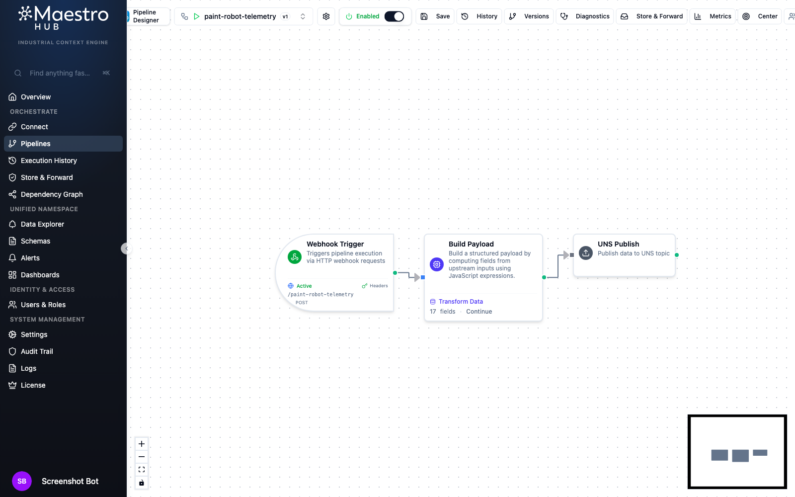
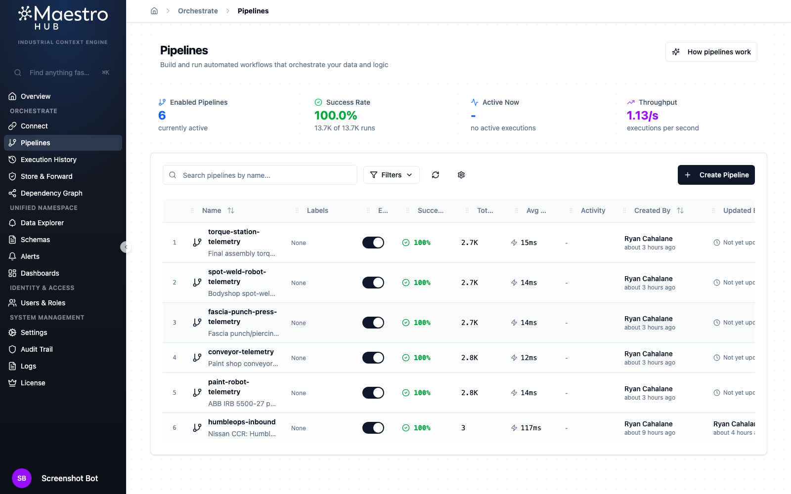
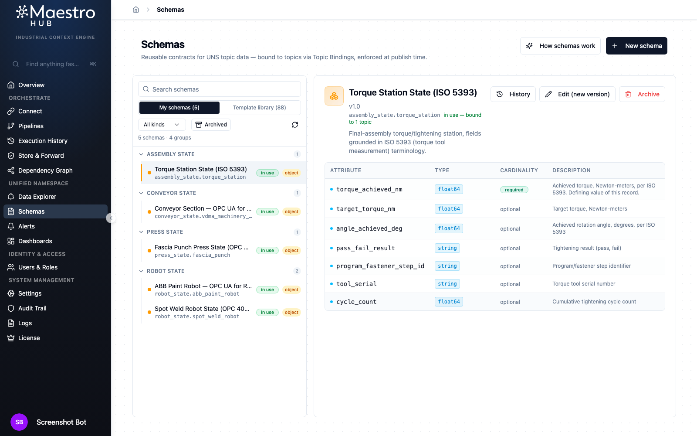
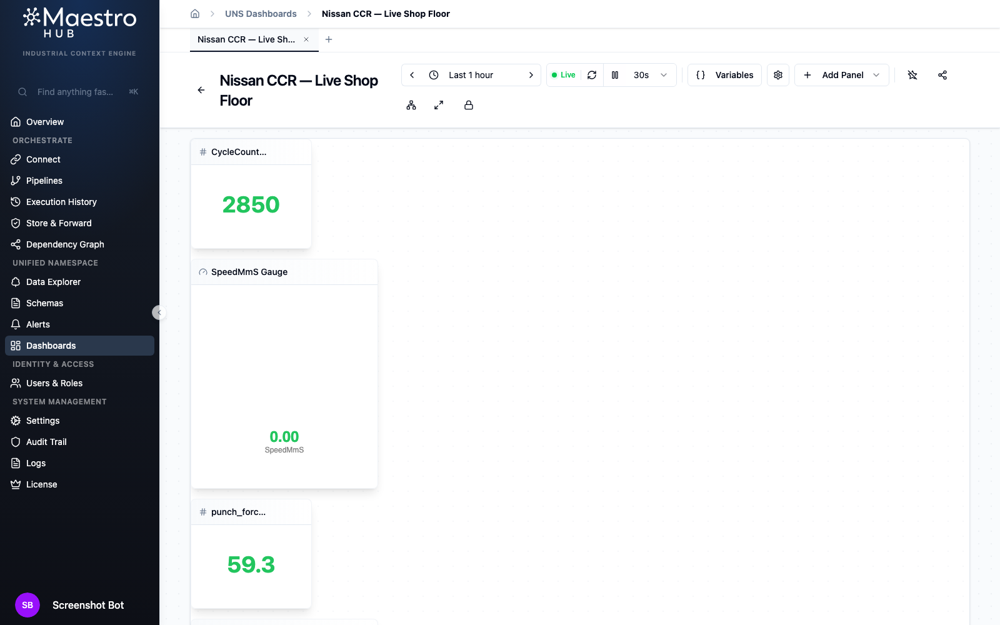
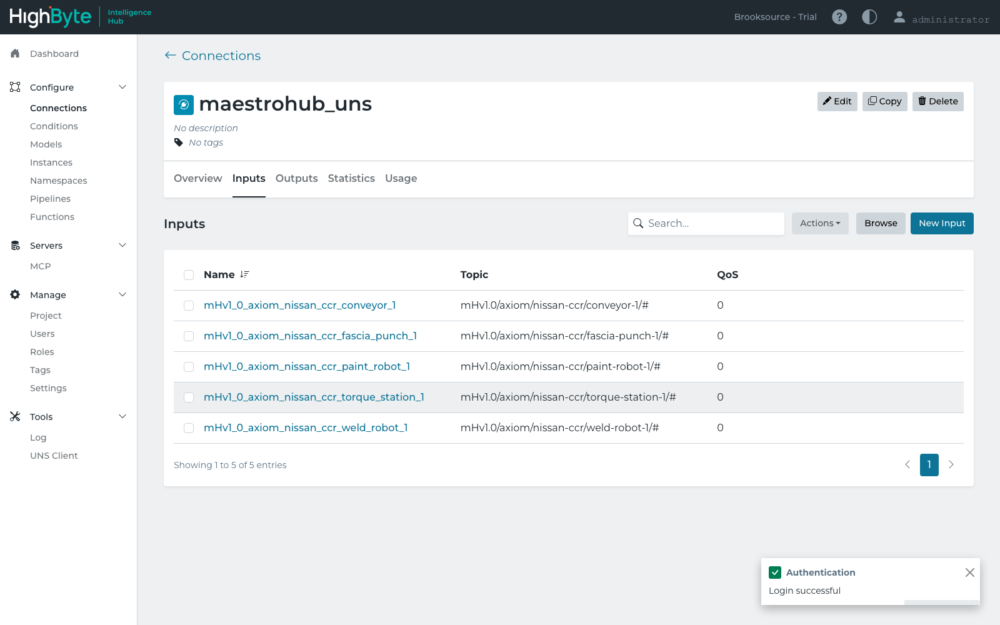

Prepared for
Nissan Smyrna senior management & maintenance leadership
Nissan Smyrna senior management & maintenance leadership
Not a slide of logos — a working pipeline. Five shop-floor equipment types publish live telemetry into a Unified Namespace, a schema registry enforces the standards contract on every message, a dashboard renders it live, and a second, independent vendor platform subscribes to the same feed with zero data translation. This page is the screenshots from that running system.
Each piece of equipment below is modeled against a real published standard — not an ad-hoc tag list — then flows through an orchestration pipeline into a governed UNS topic, where a bound schema enforces the contract on every message.
| Equipment | Standard the schema is grounded in | UNS topic |
|---|---|---|
| ABB paint robot (IRB 5500-27) | OPC 40010 — OPC UA for Robotics (MotionDeviceSystem / TaskControl state machine) | mHv1.0/axiom/nissan-ccr/paint-robot-1 |
| Paint shop conveyor section | VDMA 40001 — OPC UA for Machinery, + PackML / ISA-88 TR88.00.02 state machine | mHv1.0/axiom/nissan-ccr/conveyor-1 |
| Fascia punch / piercing press | OPC 40001-2 — OPC UA Metal Forming process values, VDMA forming-machine conventions | mHv1.0/axiom/nissan-ccr/fascia-punch-1 |
| Bodyshop spot-weld robot | OPC 40010 base (robotics) + weld-process fields | mHv1.0/axiom/nissan-ccr/weld-robot-1 |
| Final-assembly torque station | ISO 5393 — torque tool measurement terminology | mHv1.0/axiom/nissan-ccr/torque-station-1 |
Each pipeline is a visual, three-node flow: a webhook trigger accepts the raw equipment event, a transform stage maps it onto the standards-grounded field set, and a publish stage writes it to the equipment's UNS topic. No custom code — the whole thing is built and versioned in the designer.


Every UNS topic is bound to a versioned schema. The schema isn't paperwork — the platform validates every published message against it, and the description field cites exactly which standard grounds each attribute, so the "why this field" question is answered in the tool, not a separate spec doc.

Panels bind directly to UNS topics and fields — no separate reporting layer to keep in sync. Every value below updated multiple times over the course of building this page.

This is the part that actually matters for a technology decision: HighByte Intelligence Hub — a completely separate product from a different vendor — was pointed at the same MQTT-based Unified Namespace and subscribed to all five equipment topics with no data translation, no re-mapping, no custom connector work. It just read the standard.
